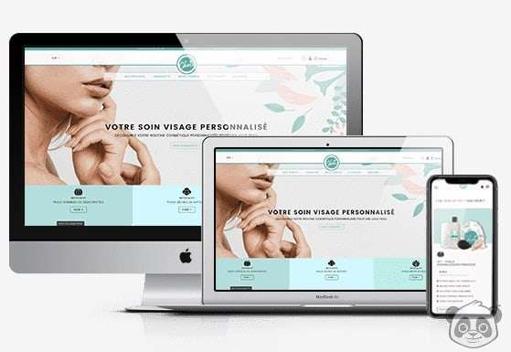
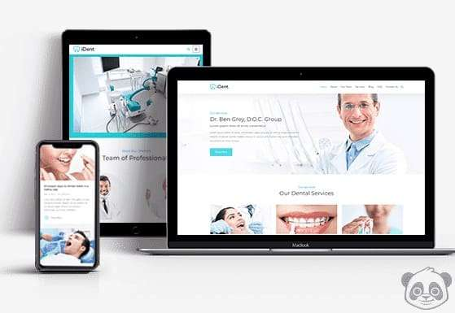
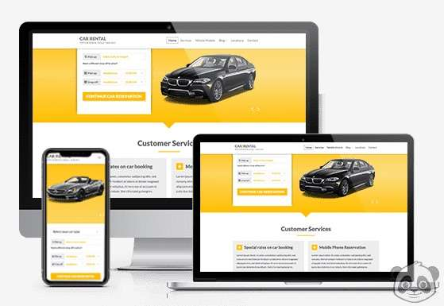
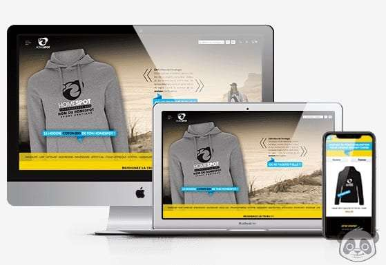

BEAUTÉÉCLAT
"BeautéÉclat" incarne une plateforme dédiée aux soins du visage et à l'esthétique, où le raffinement et la beauté convergent. En qualité de développeur, notre mission est de modeler un espace numérique riche et intuitif, offrant une expérience complète et immersive pour les amateurs de beauté.
Pour cela, nous avons conçu une interface conviviale, facilitant la découverte à travers un catalogue étendu de produits et services. Les conseils d'experts, intégrés stratégiquement, guident les utilisateurs vers des choix éclairés. En accord avec les dernières avancées technologiques, nous avons mis en place des fonctionnalités personnalisées, comme un espace client permettant la sauvegarde de produits favoris, le suivi des commandes et des recommandations personnalisées.
La sécurité des données demeure une priorité, avec des protocoles robustes assurant la confidentialité des informations personnelles et des transactions. L'interface responsive garantit une expérience homogène sur divers appareils, tandis qu'un processus de commande simplifié assure une fluidité du choix à l'achat.
Au-delà de l'aspect transactionnel, le site intègre également une section dédiée aux actualités et tendances de la beauté, maintenant ainsi les utilisateurs informés des dernières évolutions du domaine.

SOURIRESANTÉ
"SourireSanté" est une plateforme dédiée aux services dentaires, où l'excellence de la santé bucco-dentaire est mise en avant. En tant que développeur, notre objectif est de construire un environnement en ligne qui reflète la qualité et la professionnalisme associés à "SourireSanté".
Nous concevons une interface conviviale avec une navigation intuitive, offrant aux utilisateurs un accès facile à une gamme complète de services dentaires. Notre catalogue détaillé présente une variété de soins, allant des examens de routine aux traitements spécialisés.
Des fonctionnalités personnalisées, telles qu'un espace client dédié, permettent aux utilisateurs de suivre leurs rendez-vous, d'accéder à leurs historiques dentaires et de recevoir des rappels de soins préventifs. La sécurité des données est une priorité, avec des mesures robustes pour garantir la confidentialité des informations personnelles et des données médicales.

ROULEZLIBRE
"RoulezLibre" est une plateforme dédiée à la location de voitures, offrant une liberté de déplacement sans contraintes. En tant que développeur, notre objectif est de créer une expérience en ligne fluide et pratique, reflétant la flexibilité et la fiabilité associées à "RoulezLibre".
Nous concevons une interface conviviale, permettant aux utilisateurs de parcourir facilement une variété de véhicules disponibles à la location, allant des citadines aux véhicules utilitaires. Des fonctionnalités personnalisées, telles qu'un espace client dédié, permettent aux utilisateurs de gérer leurs réservations, de consulter l'historique de location et de recevoir des offres personnalisées.
La sécurité des données est une priorité, avec des protocoles robustes assurant la confidentialité des informations personnelles et des transactions. L'interface responsive garantit une expérience utilisateur optimale sur divers appareils, tandis qu'un processus de réservation simplifié facilite la planification des déplacements.

MODEINSTYLE
"ModeInStyle" est une plateforme dédiée à la mode et aux vêtements, où l'élégance et le style rencontrent l'univers numérique. En tant que développeur, notre mission est de créer une expérience en ligne qui reflète la passion et l'innovation associées à "ModeInStyle".
Nous concevons une interface dynamique avec une navigation fluide, permettant aux utilisateurs d'explorer aisément un vaste catalogue de vêtements et d'accessoires. Notre plateforme met en avant les dernières tendances, offrant des suggestions de style et des conseils de mode pour inspirer les utilisateurs dans leurs choix.
Des fonctionnalités personnalisées, comme un espace client dédié, permettent aux utilisateurs de créer des looks personnalisés, de sauvegarder leurs articles préférés, et de recevoir des recommandations basées sur leurs préférences. La sécurité des données est une priorité, avec des protocoles robustes garantissant la confidentialité des informations personnelles et des transactions.